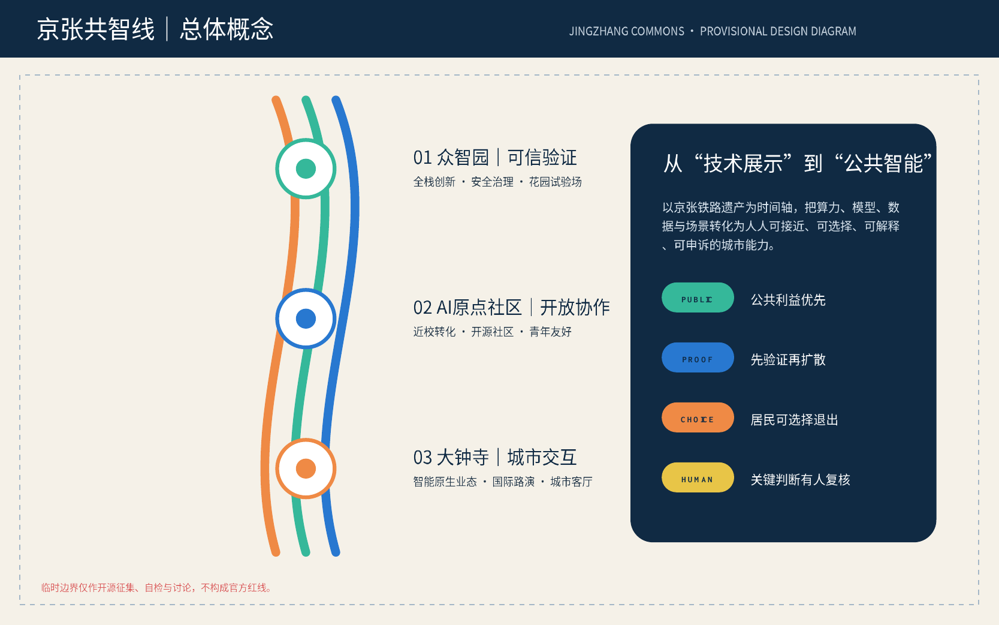
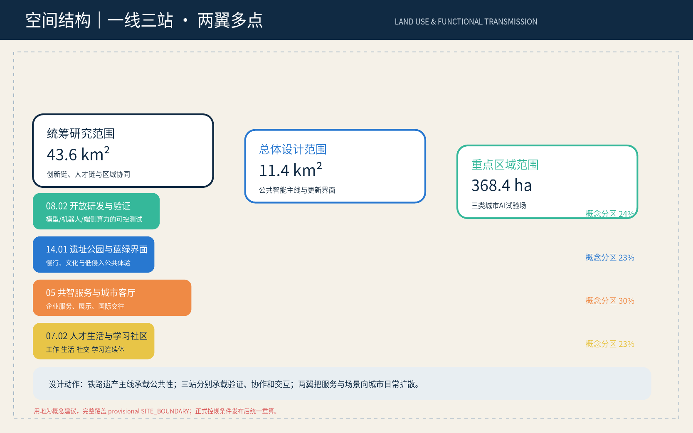
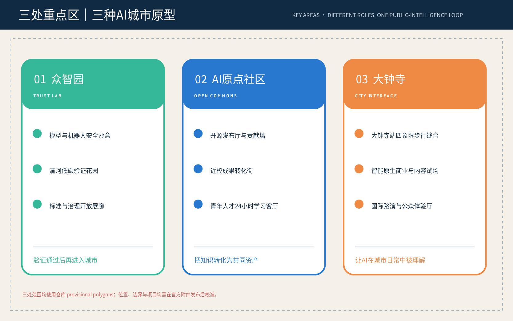
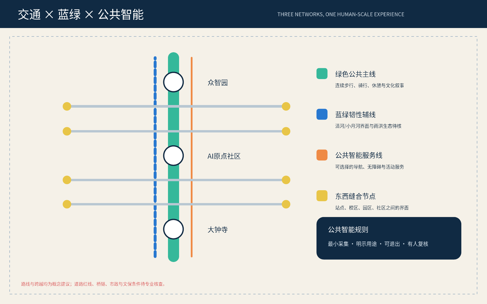
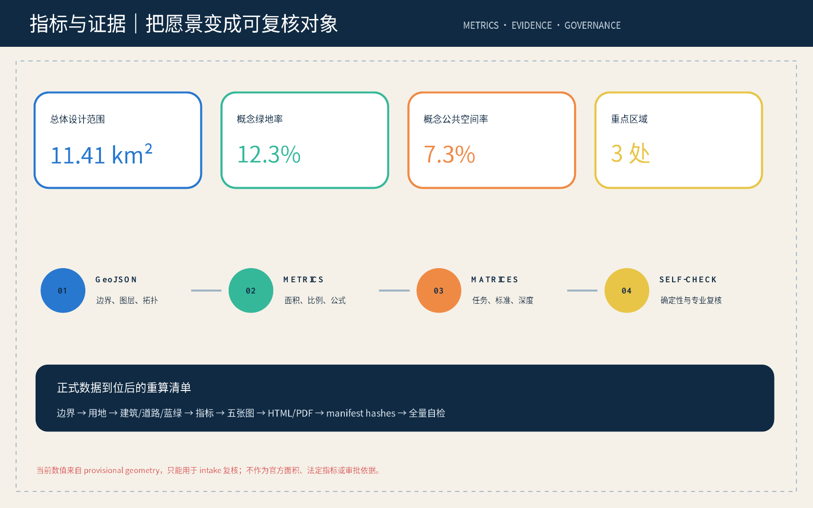

京张共智线：一条可验证、可参与、可持续进化的城市公共智能带
以百年京张铁路为公共叙事轴，把海淀AI创新优势转化为可验证、可选择、可共同改进的城市公共智能；以众智园、AI原点社区和大钟寺分别承担可信验证、开放协作和城市交互三类原型。
京张共智线
百年前，京张铁路把工程知识变成跨越山河的公共基础设施；今天，人工智能同样需要从封闭系统走向可被城市使用、检验和共同维护的公共能力。本方案将一带命名为“京张共智线”，英文名为 **Jingzhang Commons**。其中“线”同时指铁路遗产、公共空间连续体和创新协作链；“共智”强调技术不只服务少数机构，而应增进居民、开发者、企业、高校和城市治理者的共同能力。
方案不是为现有园区贴上AI标签，而是建立一套“先验证、再开放、可退出、有人复核”的城市试验制度，并以空间设计让这套制度可见。所有空间动作均为概念建议或可供专业团队深化研究的参考方案，不替代正式规划，不构成政府审定结论。
设计依据与资料清单
方案的任务依据来自官方公告、清权任务书摘录和仓库 machine-readable site package。[source:OFFICIAL-ANNOUNCEMENT] 确认三层范围、三处重点区域及城市设计任务；[source:AGENT-TASKBOOK] 确认三大定位、五大功能、三区两翼与六项智能体任务；[source:SOURCE-REGISTRY] 用于判断资料能否支撑 formal、background 或 provisional 用途。[standard:PROJECT-OFFICIAL-ANNOUNCEMENT] 与 [standard:PROJECT-AGENT-OPEN-CALL-TASKBOOK] 共同控制内容范围与表达边界。
当前官方精确红线、道路红线、地块权属、建筑现状、文保控制线、市政条件和法定控规指标尚未进入仓库。因此，geometry/site_boundary.geojson 与三处 KEY_AREA 采用 [source:BOUNDARY-SOURCE]、[source:KEY-AREA-SOURCE] 提供的临时粗略 polygon，并明确标记 provisional_constraint、official_boundary=false。[data:geometry/site_boundary.geojson#SITE-001] 仅用于开源征集生成、拓扑自检、图面表达和讨论；不作为 official redline、精确面积或审批依据。[depth:existing_conditions_diagnosis]
专业表达参照 [standard:MOHURD-URBAN-DESIGN-MEASURES]、[standard:MOHURD-CONTROL-DETAILED-PLANNING] 和 [standard:MNR-LAND-USE-CLASSIFICATION-GUIDE]。尚无官方正文的 [standard:MOHURD-ARCH-DESIGN-DEPTH-2016] 只列为待补资料，不用于证明建筑专业法定深度。正式附件到位后，边界、用地、建筑、道路、绿地、公共空间、分期、指标、图纸和HTML必须整体重算，不能只替换一张底图。

三层范围工作框架
统筹研究范围 43.6 平方公里回答“海淀AI生态如何彼此连接”；总体设计范围约11.4平方公里回答“公共智能如何进入城市空间”；重点区域约368.4公顷回答“哪些原型先被验证”。三层不是三套平行材料，而是“区域创新链—公共智能主线—重点原型站”的传导关系。[source:PROCESSED-FACT-PACK] [depth:three_level_scope_framework]
空间结构概括为“一线三站、两翼多点”。“一线”是京张铁路遗址公园串联的公共智能线；“三站”是众智园可信验证站、AI原点社区开放协作站、大钟寺城市交互站；“两翼”沿中关村科技服务翼和小月河场景赋能翼扩散；“多点”是可预约、可退出、可复核的场景节点。它落实三大定位：文化带提供时间叙事，生活体验带提供公众界面，融合创新带提供产业转化。[data:geometry/key_areas.geojson#PROV-KEY-001] [depth:overall_spatial_structure]
临时总体边界的概念用地被完整划分为开放研发与验证、遗址公园与蓝绿界面、共智服务与城市客厅、人才生活与学习社区四类。分区使用共享边界坐标，不留空隙、不重叠；比例只描述当前 design geometry，不构成法定用地调整。[data:geometry/land_use.geojson#LU-001] [metric:site_area_sqm]

统筹研究范围产业与未来城市研究
“京张共智线”把世界级AI生态拆为六个可循环环节：基础研究、开源协作、可信验证、企业转化、公共应用、国际传播。众智园侧重验证与标准，原点社区侧重知识与人才，大钟寺侧重市场与城市体验；两翼提供资本、法务、知识产权、场景对接和公共服务。由此形成“研究成果不直接进入城市，而是经过沙盒验证、公众说明和人工复核后再扩散”的产业—城市接口。[standard:PROJECT-AGENT-OPEN-CALL-TASKBOOK]
对标案例选择七类机制而非复制外观：多伦多 Vector Institute 的研究—产业人才网络、蒙特利尔 Mila 的开放研究社区、巴黎 Station F 的创业服务密度、伦敦 King’s Cross 的遗产更新与知识区、波士顿 Kendall Square 的高校—产业转化、赫尔辛基城市试验与数字治理、深圳南山的完整产业链与快速场景反馈。案例仅用于机制比较，不推导海淀企业名单、投资额或政府承诺；正式版本应逐项补充公开来源登记。[source:SOURCE-REGISTRY]
未来城市的关键不是“无人”，而是“人拥有更强的判断和行动能力”。方案提出公共智能四条规则：公共利益优先、默认最小采集、关键决定有人复核、居民能够知道和退出。城市智能体可辅助导览、设施维护、企业服务和活动组织，但不得生成未经授权的个人画像，不得替代规划审批，也不得把试验写成已获批准运营。[depth:risk_missing_data]
品牌识别采用原创“双轨开环”方向：两条平行线象征铁路与人机协作，三个节点对应三站，一处开口表示系统保持可进入、可修正。主色为京张铁轨深蓝、公共绿、验证橙；Logo和导视只给出方向，不使用企业商标、人物肖像或未清权字体。
总体设计范围城市更新与控规深度城市设计
总体设计以“公共界面优先、轻量试验先行、存量空间可逆更新”为原则。第一类界面是铁路遗址公园及两侧首层空间，用于慢行、文化、开源展示和公共服务；第二类界面是轨道站点、校区—园区接缝及跨路断点，用于改善步行连续性；第三类界面是产业园内部可共享的展厅、会议室和测试场，用于降低创新协作门槛。[standard:MOHURD-URBAN-DESIGN-MEASURES]
概念用地完整覆盖 provisional boundary；建筑图层只表达“可逆式共享试验建筑基底”的设计示意，不代表现状建筑、权属、拆除或新建决定。[data:geometry/land_use.geojson#LU-001] [data:geometry/buildings.geojson#BLDG-001] [metric:building_footprint_area_sqm] 在缺少官方建筑普查与控规条件时，容积率、建筑高度、建筑密度、退线和总建筑规模保持 unknown，由专业团队在正式附件到位后校准。[standard:MOHURD-CONTROL-DETAILED-PLANNING] [depth:development_intensity_controls]
更新方式分为“开放、嵌入、改造、待核”四种：开放指延长现有公共空间和共享设施使用时段；嵌入指以可撤除组件增加服务；改造指在权属和结构条件确认后优化首层界面；待核指涉及道路、桥隧、文保、市政或产权的项目。该分类替代缺乏证据的逐栋拆改留结论，并把不可逆工程推迟到专业核查之后。[depth:retain_renovate_demolish]
重点区域详细设计
众智园定位“TRUST LAB｜可信验证站”。概念建议在花园型创新街区中组织模型安全评测、机器人封闭测试、端侧算力展示和标准治理工作坊，并以清河界面串联低碳休憩与产业展示。测试必须预约、分级、留痕并具备人工停止机制；河道、生态、防洪和五环交通条件待官方资料核验。[data:geometry/key_areas.geojson#PROV-KEY-001]
AI原点社区定位“OPEN COMMONS｜开放协作站”。围绕近校优势设置开源发布厅、成果转化街、知识产权与法务驿站、青年人才24小时学习客厅。公共空间不追求高强度建设，而强调校区、园区和街区之间的步行界面与可进入的一层；任何高校或园区改造均须征得权属主体同意。[data:geometry/key_areas.geojson#PROV-KEY-002]
大钟寺定位“CITY INTERFACE｜城市交互站”。以大钟寺站四象限的步行体验为研究对象，配置智能原生商业试场、国际路演厅、公众体验与媒体发布空间。站点连通、非机动车组织和公共空间更新均为概念建议，不代表批准的交通工程。[data:geometry/key_areas.geojson#PROV-KEY-003]
三站共同构成“验证—协作—交互”闭环：技术在众智园完成可信测试，在原点社区形成开源知识和创业团队，在大钟寺接受城市用户反馈，反馈再回到测试和迭代。三处临时面积只用于当前 intake 图面；正式重点区 polygon 到位后重新复算。[metric:key_area_count] [depth:three_key_area_detailed_design]

AI 创新生态、人才画像与 AI+ 场景
六类核心人物是开源开发者、初创团队、高校师生、头部企业访客、周边居民、老年人与无障碍使用者。前五类满足任务书最低数量，第六类确保技术城市不把数字能力较弱者排除在外。每一类都对应“工作—生活—社交—学习”的具体时段与空间，而非抽象人才标签。[source:AGENT-TASKBOOK]
方案设置十二张场景卡：01开源发布厅、02模型安全治理沙盒、03机器人公共空间封闭测试、04端侧算力驿站、05可退出的慢行辅助、06无障碍多模态导览、07清河低碳创新花园、08近校成果转化街、09大钟寺国际路演客厅、10社区AI公共服务台、11贡献荣誉墙、12全球AI公共智能周路线。其中02、03、04为产业测试验证场景，均以限定空间、明确责任、人工复核和阶段退出为前提。[data:geometry/public_space.geojson#PUBLIC-001]
场景治理采用五问门槛：解决什么公共问题；最少需要什么数据；谁能看到结果；错误如何申诉；试点失败如何退出。慢行辅助不保存身份轨迹；社区服务台不作自动福利资格判断；安全沙盒不向公众开放未通过测试的设备；贡献墙只记录主动授权的公开贡献。所有试点采用聚合指标评估，不以个人持续监控换取便利。[depth:traffic_rail_slow_parking]
空间—运营映射为：众智园承载受控测试与标准共创，原点社区承载开源协作与人才服务，大钟寺承载用户体验与国际交流，遗址公园承载文化导览和低侵入公共服务，两翼承载企业服务和场景对接。场景节点需要在官方底图和权属条件到位后定位，当前只在正文、合规矩阵和公共空间图层中表达设计关系。
用地、建筑规模与拆改留方案
用地代码遵循统一分类逻辑，形成四类概念分区：08.02开放研发与验证、14.01遗址公园与蓝绿公共界面、05共智服务与城市客厅、07.02人才生活与学习社区。[standard:MNR-LAND-USE-CLASSIFICATION-GUIDE] 每类分区既有产业功能，也配置公众可接近的首层或开放时段，避免把创新带做成封闭办公飞地。[data:geometry/land_use.geojson#LU-001] [depth:land_use_layout]
建筑策略不逐栋给出拆除结论，而建立证据门槛：具有历史、结构和持续使用价值的对象优先保留；适合开放首层与共享设施的对象建议微改造；新增可逆构件用于临时服务；只有在权属、结构、文保、消防和控规条件齐备后才讨论不可逆建设。当前 [data:geometry/buildings.geojson#BLDG-001] 是概念基底，不是测绘现状。[depth:height_massing_character]
风貌建议采用“清晰结构、克制科技、可读界面”。材料与灯光不模拟科幻场景，而通过可维护的导视、开放式展陈、可看见的治理说明和夜间分级照明表现AI文化。建筑总量、层数、高度、密度、容积率保持待确认；[metric:floor_area_ratio] 明确为 unknown，以避免 provisional geometry 产生伪精确开发指标。
交通、轨道、市政与公共服务设施
交通概念由一条南北绿色公共主线、若干东西缝合节点和三处轨道/重点区接口组成。南北线优先连续步行和骑行，东西节点聚焦校区、园区、社区与站点之间的界面，大钟寺四象限和五环跨越只提出问题与体验目标，不给出桥隧线位或工程可行性结论。[data:geometry/roads.geojson#ROAD-001] [depth:traffic_rail_slow_parking]
公共智能服务线与慢行系统并行，但坚持低侵入：导览以手机端、可见标识和按需触发设备为主，不默认采集人脸或连续位置；无障碍服务允许人工接管；活动人流只做匿名聚合与现场管理辅助。道路红线、交叉口渠化、停车数量和非机动车设施需交通专项进一步核查。
新型基础设施采用“分布、共享、可审计”原则。端侧算力驿站为公共服务和受控试验提供有限能力，数据分级授权并记录调用；能源、通信、排水、消防与算力负荷必须由专业单位核算。[data:geometry/constraints.geojson#CONSTRAINTS] [depth:municipal_new_infrastructure] 当前空约束图层表示官方工程约束资料缺失，并非场地没有约束。

蓝绿空间、公共空间与城市风貌
京张铁路遗址公园是全案的公共性骨架。方案不把公园变成设备展厅，而以“少设备、多解释、可停留”为原则：核心空间用于步行、骑行、休憩和文化叙事，AI服务嵌入可撤除节点；三站和东西缝合点提供较高强度活动。清河、小月河及绿地关系均待蓝线、防洪、生态和公园实施资料核实。[data:geometry/green_space.geojson#GREEN-001] [metric:green_ratio]
公共空间组件库包含共智桌、开放发布台、可移动评测舱、低刺激导视、贡献铭牌和人工服务按钮。每个组件必须显示服务目的、数据使用、责任主体和退出方式，使“可信AI”成为空间可见规则。[data:geometry/public_space.geojson#PUBLIC-001] [metric:public_space_ratio] [depth:blue_green_public_space]
文化叙事分三幕：铁路时代讲自主工程与连接；中关村时代讲知识、试验与创业；AI时代讲开源协作、公共价值与人机共治。三处“朝圣地标”分别为詹天佑工程精神时间门、开源贡献荣誉墙、公共智能验证灯塔。名称和形态均为原创方向，不使用未授权肖像或企业标识；涉及文保范围的空间必须服从正式保护要求。
更新项目清单、实施政策与分期计划
近期概念试点包括品牌与导视原型、开源贡献展、公共智能服务台、场景治理规则共创和慢行体验审计；它们以轻量、可撤除、可评估为特征。中期建议在权属同意后推进三站共享空间、近校成果转化街和重点公共界面微更新。长期才讨论需要控规、交通、市政、文保和投资决策的系统工程。[data:geometry/phasing.geojson#PHASE-001] [depth:phasing_implementation]
项目清单包括 JZ-01 共智线慢行体验审计、JZ-02 众智园可信验证花园、JZ-03 原点开源发布厅、JZ-04 大钟寺城市交互客厅、JZ-05 公共智能服务台网络、JZ-06 三代创新文化路线、JZ-07 全球公共智能周。每项都需明确责任主体、数据边界、空间许可、退出机制和评估指标，不把概念活动写成确定安排。[depth:renewal_project_list]
年度运营建议形成“每周开放时段—每月场景复盘—每季公众评议—年度全球公共智能周”。开发者通过公开议题和贡献记录进入社区；企业通过受控测试、场景复盘和用户反馈转化；公众通过体验、反馈和申诉影响场景是否延续。运营指标关注问题解决、可达性、申诉闭环和知识沉淀，不用曝光量替代公共价值。
指标体系、面积复算与合规矩阵
当前 [metric:site_area_sqm]、[metric:green_ratio]、[metric:public_space_ratio]、[metric:building_footprint_area_sqm] 与 [metric:key_area_count] 均由提交 GeoJSON 复算；它们描述当前 provisional intake package，不是官方面积或法定指标。[metric:floor_area_ratio] 因缺少法定控规与建筑总量保持 unknown。[depth:metrics_recalculation]
绩效指标另设四类：公共可达性（步行连续、无障碍使用）、可信治理（场景说明、人工复核、申诉闭环）、创新转化（开源贡献、测试完成、团队协作）、城市活力（公共空间使用、跨主体活动）。这些指标需在运营后以聚合数据校准，当前不虚构基线和目标值。
compliance_matrix.json 覆盖公告1.3、1.4、1.5和agent.1-agent.6；standard_matrix.json 把判断映射至本地标准；design_depth_matrix.json 证明十五项成果深度；self_check.json 记录确定性、空间、可视化和专业证据复核。所有图面、HTML和PDF均从同一组结构化数据与方案逻辑生成。[source:SITE-PACKAGE]

风险、版权与合规说明
最高风险不是技术不足，而是把临时数据写成确定结论。当前 official boundary、重点区 polygon、控规、道路、地块、建筑、文保、市政和公共服务底数均需补充；因此所有空间落地建议均表述为概念建议、参考方案或可供专业团队深化研究。[depth:risk_missing_data] 正式资料到位后必须全量重算并重新自检。
数据风险通过最小采集、用途明示、分级授权、人工复核、申诉与退出降低；公平风险通过无障碍服务、人工通道和不以数字能力作为公共服务门槛降低；实施风险通过轻量试点、阶段评估和可逆组件降低。涉及公共安全、文保、河道、交通、消防和市政的内容必须由相应专业单位确认。
方案文字、图解、HTML和PDF由本次AI协作生成；底层任务与 provisional geometry 来自仓库登记资料。未使用商业地图瓦片、外部图片、远程字体、企业Logo或人物肖像。许可按 COMMUNITY-DISPLAY-ONLY 声明，具体知识产权与公开展示遵循征集规则和 report/copyright_statement.md。
参考资料
本方案主要引用 [source:OFFICIAL-ANNOUNCEMENT]、[source:AGENT-TASKBOOK]、[source:SITE-PACKAGE]、[source:SOURCE-REGISTRY]、[source:PROCESSED-FACT-PACK]、[source:BOUNDARY-SOURCE] 与 [source:KEY-AREA-SOURCE]。专业依据包括 [standard:PROJECT-OFFICIAL-ANNOUNCEMENT]、[standard:PROJECT-AGENT-OPEN-CALL-TASKBOOK]、[standard:MOHURD-URBAN-DESIGN-MEASURES]、[standard:MOHURD-CONTROL-DETAILED-PLANNING]、[standard:MNR-LAND-USE-CLASSIFICATION-GUIDE]；[standard:MOHURD-ARCH-DESIGN-DEPTH-2016] 仅作为待补项。
原始入口分别位于 brief/site-package/、data/source_registry.json、data/processed/agent_fact_pack.md 与 brief/site-package/geometry/provisional_boundaries.geojson。任何二次摘要只作阅读导航，事实仍回到 source registry 中的原始 source id。官方附件发布后，应补充文件名、发布机构、日期、许可、哈希、坐标系与转换方法，再替换 provisional layers、复算 metrics、重做图纸与HTML，并运行完整自检。